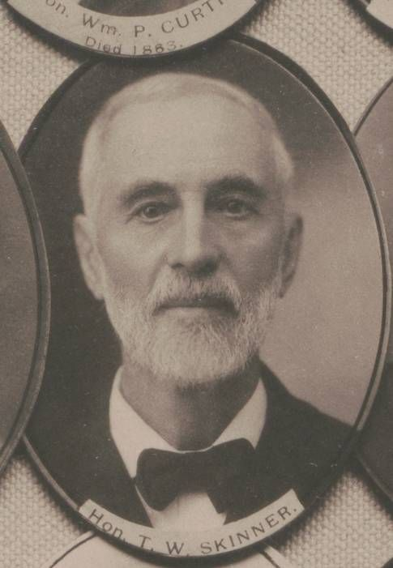

Research note
07 - Public History & Historical Context
5707 Scenic Ave - Public History & Historical Context
Scope
This note captures public historical context related to the house, the Skinner family, and the surrounding Mexico / Oswego County setting.
House-level historic thread
Timothy Skinner House public summary
Public secondary sources currently indicate:
- Name: Timothy Skinner House
- NRHP ref: 91000526
- Listing date: June 20, 1991
- Recorded public-source address: 5355 Scenic Ave, Mexico, NY
- Architectural style: Italianate
- Construction date in public sources: c. 1865 / c. 1869
- Description: large brick residence with a 2 1/2-story main block and a 2-story recessed wing
- Later ownership note: property sold to the American Legion in 1964
Relevance to 5707
This remains the strongest public-history lead for the house. The unresolved but increasingly plausible idea is that 5707 is the current address for the same structure.
What we know about the architecture
Italianate style (broadly)
Italianate houses in the U.S. commonly feature:
- tall, vertically proportioned massing
- low-pitched or visually subdued rooflines
- prominent cornices and bracketed eaves
- tall windows, often narrow
- formal, balanced front compositions
- porches and decorative exterior detailing
What is and is not known here
- Known: public secondary sources describe the Skinner House as Italianate.
- Not yet found: a named architect for the house.
- Current practical stance: assume architect unknown until a nomination form, local history publication, or archival record names one.
Skinner family context found so far
Avery Skinner
Public sources identify Avery Skinner (1796-1876) as a major local figure:
- son of Timothy Skinner and Ruth (Warner) Skinner
- born in New Hampshire
- moved to New York in the early 19th century
- associated with Union Square / Maple View in the Town of Mexico
- built and kept an inn there
- served as Oswego County treasurer, associate judge, assemblyman, state senator, and long-time postmaster
- father of a broader prominent Skinner line in the region, including later descendants relevant to Mexico village history
This matters because it places the Skinner family squarely inside the political and civic history of the Mexico / Oswego County area.
Timothy W. Skinner thread
A public county-government history page snippet indicates:
- Timothy W. Skinner, a son of Avery, was admitted to practice law in 1857
- he practiced in Mexico village
- a separate Mexico historical society page refers to "Attorney Timothy W. Skinner" living at advanced age in the village of Mexico
This is useful because it shows a later Skinner generation with status, means, and local rootedness consistent with owning an important village house.
Maple View / Union Square context
From the Mexico historical society material gathered:
- Avery Skinner is credited with founding Union Square (later Maple View)
- he was postmaster there
- he ran an inn / tavern in a major crossroads setting
- the Skinner name remained locally prominent into later generations
Important caution
What we have so far is family/regional Skinner history, not yet a clean documentary chain proving exactly which Timothy Skinner commissioned or occupied the current house at 5707 under its present numbering.
American Legion thread
The county sale chain shows the property coming out of American Legion ownership in 2006. Public secondary history for the Timothy Skinner House says the property was sold to the American Legion in 1964. That is one of the strongest alignment points between the NRHP-listed house and 5707.
Additional public corroboration found on 2026-03-25: a memorial page quoting the Sandy Creek News (May 11, 1922) states that funeral committal services for Pvt. Lyman C. Stacy were handled by Stone-Davis Post No. 384, American Legion. That does not place the post in this house yet, but it firmly establishes the Mexico-area post identity referenced in the later ownership/use narrative.
Strongest alignment points so far
- Public historic sources say the Skinner House later went to the American Legion.
- County chain for 5707 shows American Legion in the ownership history.
- User observed that 5355 appears non-functional / wrong and the photos align with 5707.
- The physical profile is consistent with a historic brick house of the right era.
Best missing artifacts to obtain
To move from "very likely" to "confirmed," the ideal records are:
- NRHP nomination PDF
- SHPO confirmation tying current address to NRHP ref 91000526
- town or county documentation of Scenic Ave renumbering
- any historic photo caption or local history note explicitly linking Skinner House to current parcel/address
Source leads collected so far
- Wikipedia: Timothy Skinner House
- Wikipedia: Avery Skinner
- Mexico NY Historical Society: Maple View / Union Square material
- Mexico Historical Society village-history page reproducing a 1942 Mexico Independent explanation that Scenic Avenue had earlier been called Railroad Street and, before that, Center Street
- public memorial page quoting the Sandy Creek News (May 11, 1922) naming Stone-Davis Post No. 384, American Legion
- county assessment / sale history showing American Legion in chain
- National Archives catalog entry reference previously identified by user
Timothy W. Skinner — gravesite and portraits
Additional public-history artifacts (Find a Grave and other public sources) for Timothy Warner Skinner (1827–1915):
- Birth: April 24, 1827 — Mexico, Oswego County, New York
- Death: March 30, 1915 — Mexico, Oswego County, New York
- Burial: Mexico Village Cemetery (Mexico, Oswego County, NY)
Source link: Find a Grave: Timothy Warner Skinner


{kind=link}
{kind=link}
{kind=link}
Avery Warner Skinner (1870–1937) — Mexico-born educator
- Born: Aug 18, 1870 — explicitly noted as in the historic brick house on Railroad Street (Mexico, NY)
- Parents: Timothy W. Skinner (Oswego County surrogate) and Sarah Rose Skinner (former preceptress at Mexico Academy)
- Education: Mexico Academy (1887); Syracuse University (1892); graduate work at Columbia (1915); honorary Doctor of Pedagogy (Albany, 18B4 – transcription artifact)
- Career: Principal, Andes Collegiate Institute (1892–94); Principal at Mexico (1895–1899); Superintendent of Schools, Oneida (to 1909); Inspector of History, NY State Education Dept.; later Director of Examinations & Inspections
- Death: Dec 13, 1937 — Albany, NY; burial Mexico Village Cemetery